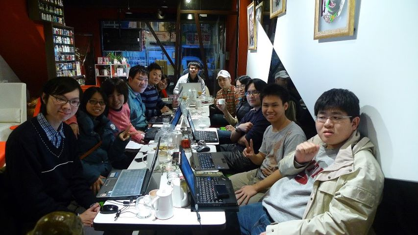

MozTW Lab
交朋友、聊是非、互助研究的好所在
A place where you can make friends, gossip, and study with each other.
你可以在這裡…
A place where you can…
- 聊聊 Web 界的八卦 Unveil gossips of the Web
- 找人幫你的作品給點意見 Get comments for your works
- 與志同道合的夥伴見面 Meet partners with common interests
-
約團購面交 Shop together to get discounts